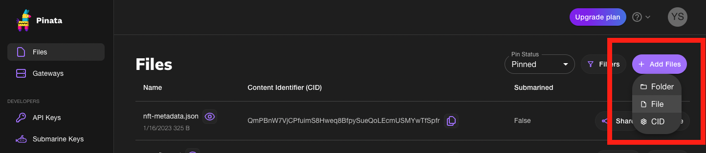
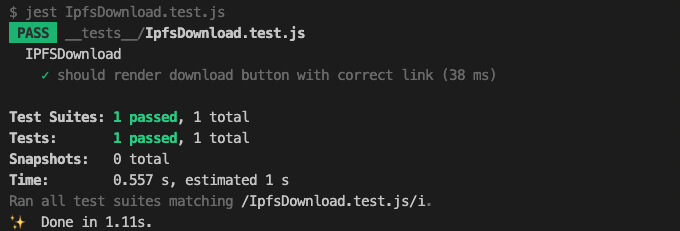

🛸 IPFS へファイルをアップロードする
次のステップは、Webアプリケーションへの商品の追加です。
商品データをサーバーやクラウドストレージに保存しておくこともできますが、今回はIPFSを利用します。
IPFSはInterPlanetary File Systemの略で、データを分散的に保存してくれる分散型ストレージです。
IPFSに保存されたデータは一定期間内にアクセスがないと消えてしまう可能性があるので、ユーザーは定期的にストレージにアクセスピンする必要があります（今回のチュートリアルでは実施しません）。
※IPFSの詳細については ここ を参照してみてください。
今回はIPFS pinning serviceのPinataを利用します。
それでは、Pinataを利用してIPFSに画像をアップロードしてください。
※アップロードするためにはPinataにログイン後、ページ右上の+ Add Files -> Fileと進みます。

続いて、アップロードした画像の「Content Identifier（CID）」の欄に記載されたIDハッシュをコピーしておきましょう。
CIDはIPFS上でコンテンツにアクセスするためのアドレスで、以下のようなリンクを作成してアクセスすることができます。
https://cloudflare-ipfs.com/ipfs/あなたの画像ファイルのCID
🎈 IPFSからファイルをダウンロードする
hooksフォルダ内にIPFSゲートウェイのURLにハッシュとファイル名を追加するuseIPFS.jsファイルがあります。
これは、フロントエンド側でIPFSからのダウンロードの動作を担うものです。
useIPFS()を使うため、componentsフォルダの中にIpfsDownload.jsファイルを作成し、useIPFS()を呼び出すコンポーネントを作成していきます。
// IpfsDownload.js
import useIPFS from '../hooks/useIPFS';
const IPFSDownload = ({ hash, filename }) => {
const file = useIPFS(hash, filename);
return (
<div>
{file ? (
<div className="download-component">
<a className="download-button" href={file} download={filename}>Download</a>
</div>
) : (
<p>Downloading file...</p>
)}
</div>
);
};
export default IPFSDownload;
ダウンロードリンクを描画するだけのシンプルなコンポーネントです。
では、テストスクリプトを実行して模擬的に動作確認をしてみましょう。
簡単にテストの内容を説明します。__tests__/IpfsDownload.test.jsでは、コンポーネントに仮の値を渡して期待する結果がDownloadリンクに設定されているかをテストしています。
最初に、テストで使用する仮の値を設定します。
// __tests__/IpfsDownload.test.js
/** 準備 */
/** IPFSDownloadコンポーネントに渡す引数と、useIPFSフックの戻り値を定義します */
const mockHash = 'hash';
const mockFilename = 'filename';
const mockFile = `https://gateway.ipfscdn.io/ipfs/${mockHash}?filename=${mockFilename}`;
useIPFS.mockReturnValue(mockFile);
モック（Mock）という言葉は、実際のものや状況を「模倣」するものを指します。
テストにおいては、実際のオブジェクトや関数の代わりに使用される模擬的なオブジェクトや関数を指します。上記のテストスクリプトでは、コンポーネントに渡す引数・useIPFSフックをモックしています。これにより、テスト対象のコードとそれ以外の部分（コンポーネントの外から渡されるデータや外部モジュールなど）を分離し、テスト対象のコードのみを独立してテストできるようになります。
次に、対象コンポーネントのレンダリングを行います。ここで、先ほど定義した値を渡しています。
// __tests__/IpfsDownload.test.js
/** 実行 */
render(<IPFSDownload hash={mockHash} filename={mockFilename} />);
最後に、テスト対象のコンポーネントが期待する結果を返しているかをテストします。
// __tests__/IpfsDownload.test.js
/** 確認 */
const linkElement = screen.getByRole('link', {
name: /Download/i,
});
/** useIPFSフックが呼び出され、ダウンロードリンクが適切に設定されていることを確認します */
expect(linkElement).toBeInTheDocument();
expect(linkElement).toHaveAttribute('href', mockFile);
expect(linkElement).toHaveAttribute('download', mockFilename);
screen.getByRole()は、指定されたrole属性を持つ要素を返します。今回テスト対象のコンポーネントでは、下記の要素が該当します。
<a className="download-button" href={file} download={filename}>Download</a>
それではテストスクリプトを実行してみましょう。package.jsonファイルのjestコマンドを更新してIPFSDownloadコンポーネントのテストのみ実行されるようにします。
// package.json
"scripts": {
// 下記に更新
"test": "jest IpfsDownload.test.js"
}
jestコマンドを更新したら、ターミナルでyarn testを実行してみましょう。
yarn test
テストがパスしたら、IPFSDownloadコンポーネントの実装は完了です。

😔 ダウンロード機能の実装
続いて、ダウンロード機能を実装しましょう。
pagesディレクトリにapiフォルダを追加し、その中にproducts.jsonファイルを作成して以下のコードを貼り付けてください。
このproducts.jsonファイルは商品のモックデータベースです(サンプルのimage_urlは非常に長いですが気にせず進めてください)。
name及びhashフィールドには、Pinataへアップロードしたファイルの名前及び生成されたCIDを入れておきましょう。
// products.json
[
{
"id": 1,
"name": "ANYA WAKUWAKU PACK",
"price": "0.09",
"description": "Get this hot Anya pack for only $0.09! Includes 2 hot Anyas!",
"image_url": "",
"filename": "anya",
"hash": "QmcJPLeiXBwA17WASSXs5GPWJs1n1HEmEmrtcmDgWjApjm"
}
]
次に、componentsフォルダにProduct.jsファイルを作成して以下のコードを貼り付けてください。
// Product.js
import styles from '../styles/Product.module.css';
import IPFSDownload from './IpfsDownload';
export default function Product({ product }) {
const { id, name, price, description, image_url } = product;
return (
<div className={styles.product_container}>
<div >
<img className={styles.product_image}src={image_url} alt={name} />
</div>
<div className={styles.product_details}>
<div className={styles.product_text}>
<div className={styles.product_title}>{name}</div>
<div className={styles.product_description}>{description}</div>
</div>
<div className={styles.product_action}>
<div className={styles.product_price}>{price} USDC</div>
{/* 以下の部分は後ほどAPIからハッシュを取得する処理に変更します。 */}
<IPFSDownload filename="anya" hash="QmcJPLeiXBwA17WASSXs5GPWJs1n1HEmEmrtcmDgWjApjm" cta="Download goods"/>
</div>
</div>
</div>
);
}
続いて、データベースから製品をフェッチできるAPIエンドポイントを作成します。
pages/apiフォルダ内にfetchProducts.jsファイルを作成して以下のコードを貼り付けてください。
// fetchProducts.js
import products from './products.json'
export default function handler(req, res) {
if (req.method === 'GET') {
// リクエストを受け取った場合、ハッシュとファイル名を除いた製品のコピーを作成します。（配列）
const productsNoHashes = products.map((product) => {
const { hash, filename, ...rest } = product;
return rest;
});
res.status(200).json(productsNoHashes);
}
else {
res.status(405).send(`Method ${req.method} not allowed`);
}
}
ここでハッシュをフェッチしない理由は、このWebアプリケーションを閲覧する人が支払いを完了する前にハッシュを渡したくないからです。
さて、これまでの作業をフロントエンドに反映させるためにindex.jsを以下のように更新しましょう。
// index.js
import { useWallet } from '@solana/wallet-adapter-react';
import dynamic from 'next/dynamic';
import { useEffect, useState } from 'react';
import HeadComponent from '../components/Head';
import Product from '../components/Product';
// 参照: https://github.com/solana-labs/wallet-adapter/issues/648
const WalletMultiButtonDynamic = dynamic(
async () =>
(await import('@solana/wallet-adapter-react-ui')).WalletMultiButton,
{ ssr: false },
);
// 定数を宣言します。
const TWITTER_HANDLE = 'あなたのTwitterハンドル';
const TWITTER_LINK = `https://twitter.com/${TWITTER_HANDLE}`;
const App = () => {
const { publicKey } = useWallet();
const [products, setProducts] = useState([]);
useEffect(() => {
if (publicKey) {
fetch(`/api/fetchProducts`)
.then(response => response.json())
.then(data => {
setProducts(data);
console.log('Products', data);
});
}
}, [publicKey]);
const renderNotConnectedContainer = () => (
<div>
<img src="https://media.giphy.com/media/FWAcpJsFT9mvrv0e7a/giphy.gif" alt="anya" />
<div className="button-container">
<WalletMultiButtonDynamic className="cta-button connect-wallet-button" />
</div>
</div>
);
const renderItemBuyContainer = () => (
<div className="products-container">
{products.map((product) => (
<Product key={product.id} product={product} />
))}
</div>
);
return (
<div className="App">
<div className="container">
<header className="header-container">
<p className="header"> 😳 UNCHAIN Image Store 😈</p>
<p className="sub-text">The only Image store that accepts shitcoins</p>
</header>
<main>
{publicKey ? renderItemBuyContainer() : renderNotConnectedContainer()}
</main>
<div className="footer-container">
<img alt="Twitter Logo" className="twitter-logo" src="twitter-logo.svg" />
<a
className="footer-text"
href={TWITTER_LINK}
target="_blank"
rel="noreferrer"
>{`built on @${TWITTER_HANDLE}`}</a>
</div>
</div>
</div>
);
};
export default App;
これで、ウォレットを接続するとWebアプリケーションにDownloadボタンが表示されるようになりました。
Downloadボタンをクリックすると、IPFSから該当のファイルをダウンロードすることができます。
IPFS上のファイルは複数のノードにキャッシュされるため、アップロードしたばかりのファイルは少数のノードにしか存在せず、ダウンロードに少し時間がかかることがあります。
逆にファイルへのアクセスが多いほど、キャッシュされるノードが多くなるため、ダウンロードが速くなります。
🎎 あなただけの商品棚へ!
以下のコマンドでWebアプリケーションを動かしてみましょう。
yarn dev
ウォレット接続後の画面でかわいく名付けられた商品が並べられているはずです。
余力のある人は、products.jsonに新しい商品を追加してみましょう!
🙋♂️ 質問する
ここまでの作業で何かわからないことがある場合は、Discordの#solanaで質問をしてください。
ヘルプをするときのフローが円滑になるので、エラーレポートには下記の4点を記載してください ✨
1. 質問が関連しているセクション番号とレッスン番号
2. 何をしようとしていたか
3. エラー文をコピー&ペースト
4. エラー画面のスクリーンショット
おめでとうございます!
セクション1は終了です!
ぜひ、あなたのお気に入りの商品が表示されたフロントエンドのスクリーンショットを#solanaに投稿してください 😊
あなたの成功をコミュニティで祝いましょう 🎉
次のセクションでは、決済機能を実装していきます!